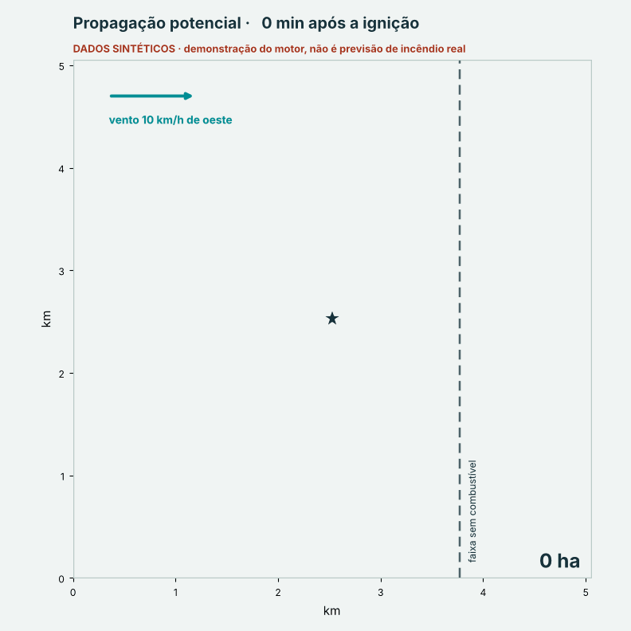
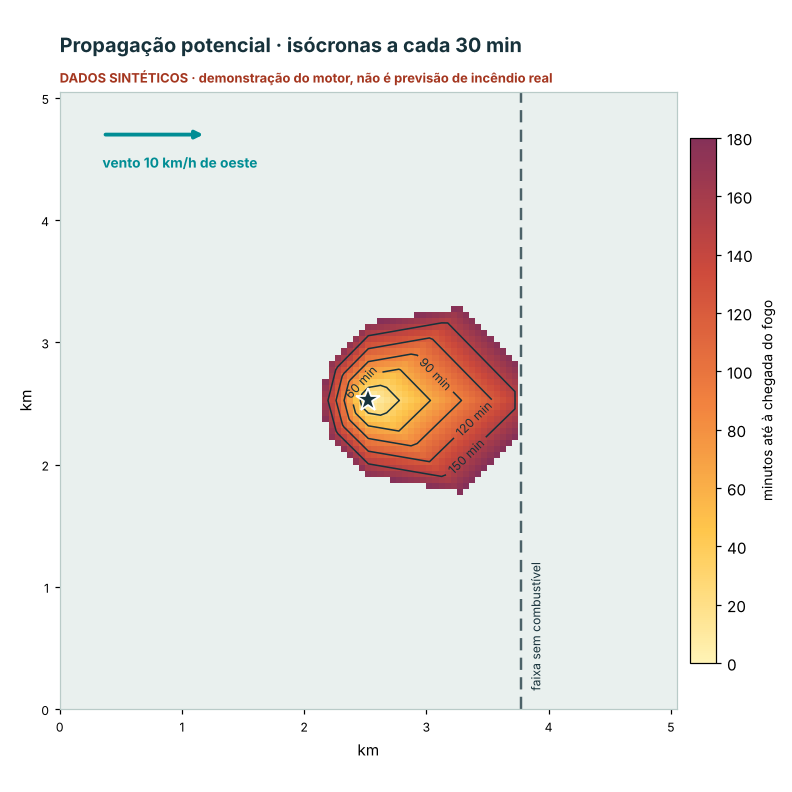

PROTÓTIPO DE INVESTIGAÇÃO
IGNISPYRO Simulator
propagação potencial de incêndios
A partir de um ponto de ignição (ou de um polígono), do terreno, do combustível e do vento, o simulador calcula onde o fogo poderia chegar e quando. Esta página mostra uma execução real do motor com dados sintéticos, para explicar o que o simulador produz.
AVISONão é uma previsão de incêndio real.
Terreno plano, combustível uniforme e vento inventado, criados só para demonstrar o motor. O simulador está em fase de investigação, sem validação operacional, e não é equivalente certificado ao FARSITE ou ao FlamMap. Não usar para decisões de segurança.


187 haárea potencial em 180 min
50 mresolução da grelha (5 × 5 km)
10 km/hvento sintético de oeste
0,1 scálculo desta demonstração*
* Tempo de uma grelha pequena e sintética. Não mede o desempenho em produção.
O que o simulador produz
- Perímetro potencial e isócronas de chegada do fogo;
- velocidade efetiva de propagação (ROS) e caminhos do fogo na grelha;
- relatório em JSON com a origem dos dados e as limitações;
- exportações em GeoJSON, KML, Shapefile (ZIP) e GeoTIFF.
Estado e limites
- Protótipo executável com testes automáticos e cenários retrospetivos, sem validação operacional;
- núcleo de propagação do tipo Rothermel, com discretização em grelha de 8 vizinhos;
- não inclui fogo de copas, focos secundários (spotting) nem supressão;
- dados em falta bloqueiam ou degradam o resultado de forma explícita; nunca se convertem em zero.